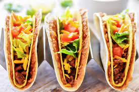

Double Decker Tacos Recipe

Description:
Get ready for a flavor-packed fiesta with our Double Decker Tacos – a tantalizing fusion of classic Mexican delights and a burst of cheesy goodness!
Our culinary journey begins with a pound of savory ground beef, expertly seasoned with a mouthwatering blend of spices from our special taco seasoning mix. Each bite bursts with the authentic taste of Mexico, transporting your taste buds to the bustling streets of taco vendors.
But that's just the beginning! We take the traditional taco experience to new heights by introducing a layer of velvety refried beans, generously smothered over a dozen perfectly prepared crisp taco shells. The beans add a creamy texture that effortlessly melds with the rich flavors of the seasoned beef, creating a symphony of tastes in every bite.
Now, imagine the harmony of flavors when these crunchy taco shells are harmoniously enveloped in soft, warm flour tortillas. This culinary magic is what sets our Double Decker Tacos apart – a perfect balance of textures that will leave you craving more.
To further elevate this culinary delight, we present you with the creamiest and most indulgent guacamole made from ripe avocados. Enhanced with a hint of tanginess from freshly squeezed lime juice and a dollop of sour cream, this zesty and velvety concoction adds a burst of freshness to each taco.
The fiesta of flavors doesn't end there! A generous sprinkle of shredded Cheddar cheese blankets our Double Decker Tacos, making every mouthful a cheese lover's dream. The ooey-gooey goodness of melted cheese ties all the elements together, leaving you with a gratifying, savory sensation that you won't find anywhere else.
But wait, there's more! We crown each taco with a medley of crisp lettuce, juicy chopped tomatoes, and tangy red onions, adding a burst of color and a refreshing contrast to the robust flavors.
Finally, no taco experience is complete without a dollop of velvety sour cream. Its cool creaminess perfectly complements the spiciness of the seasoned beef, adding the final touch of perfection to our Double Decker Tacos.
Whether you're a taco enthusiast or just seeking an unforgettable culinary adventure, our Double Decker Tacos promise to take your taste buds on a rollercoaster ride of flavors and textures. Join us and indulge in the ultimate taco experience that will have you coming back for seconds – and thirds! ¡Buen provecho!
Ingredients:
- 1 pound ground beef
- 1 (1 ounce) packet taco seasoning mix, divided
- 1 (16 ounce) can refried beans
- ⅔ cup water
- 12 prepared crisp taco shells
- 2 avocados
- 1 tablespoon sour cream
- 1 fresh lime, juiced
- salt and black pepper to taste
- 12 (7 inch) flour tortillas
- 2 cups shredded Cheddar cheese
- 1 cup shredded lettuce
- 1 large tomato, chopped
- ¼ red onion, chopped
- ½ cup sour cream
Directions:
- Place the ground beef in a skillet over medium heat, and sprinkle about 3/4 of the packet of taco seasoning over the meat. Cook and stir the ground beef, breaking it up as it cooks, until the beef is browned and crumbly, 10 to 15 minutes. Drain the excess grease.
- Mash the refried beans with the water in a small saucepan, and sprinkle with the rest of the seasoning packet. Heat the refried beans over low heat until simmering.
- Preheat oven to 300 degrees F (150 degrees C). Place the crisp taco shells on a baking sheet, and warm them in the preheated oven for 3 to 5 minutes.
- To make the guacamole, peel, seed, and mash the avocados in a bowl with 1 tablespoon of sour cream, the lime juice, and salt and pepper to taste, and set aside.
- To build the tacos, spread each flour tortilla with about 2 tablespoons of heated refried beans. Wrap the tortilla gently around a crisp tortilla shell. Spread about 2 tablespoons of ground beef along the bottom of the crisp shell, and sprinkle about 2 tablespoons of shredded Cheddar cheese on top of the meat. Top the cheese with shredded lettuce, a sprinkle of chopped tomato and onion, and a dollop of sour cream and guacamole.